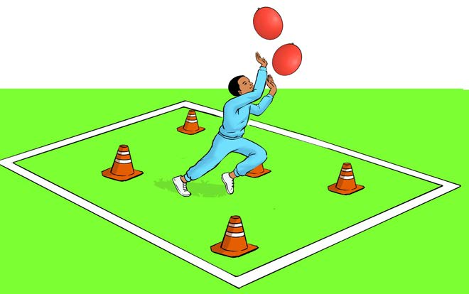

9. Increase the complexity by using two balloons at the same time while avoiding obstacles, as shown in Figure 10;

Figure 10: A pupil preventing two balloons from falling while avoiding obstacles
For the competition, whoever drops the balloon, allows it to go outside the boundaries or hits the obstacles will be out of the game until the winner is found.
Activity 2
Compete with your colleagues to prevent the balloon from falling while increasing the obstacles and consider how long each of you will be able to withstand the obstacle.
Exercise 2
1. What is the importance of balloon balance exercise to you?
2. Which games will this exercise help you play?
3. Name other equipment you can use as obstacles instead of cones.